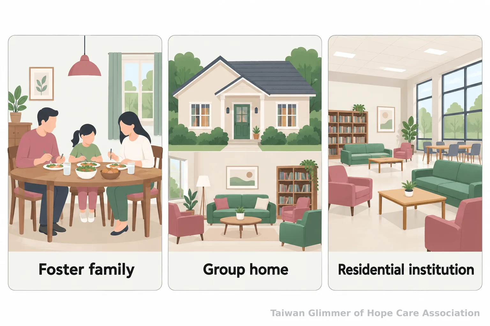
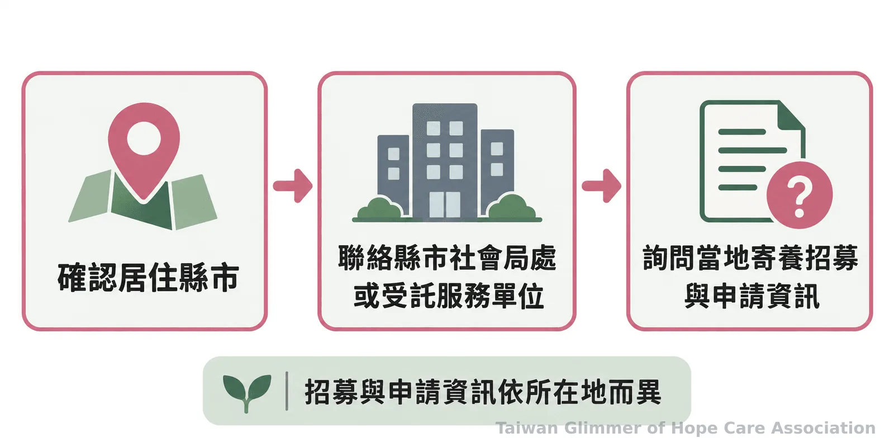

兒少安置怎麼安排？從緊急保護到返家評估的幾個環節
兒少安置包含緊急保護與後續照顧安排。認識寄養家庭、團體家庭和安置機構的差別，了解返家評估、寄養申請及求助管道。
孩子因安全需要暫時離家，後續安排由地方主管機關依個別情況評估。家長、教師與社區夥伴認識安置制度，有助理解各種照顧方式與可用資源。
緊急安置處理什麼？
緊急安置是必要時先啟動的保護處置，後續照顧方式另依孩子的安全與需求評估。它不等於某一種固定住所，也不能據此推斷孩子何時返家。
《兒童及少年福利與權益保障法》第56條列出需要保護、安置或其他處置的情況；主管機關須以兒少最佳利益為優先，經多元評估後決定適當措施。必要時可緊急安置。
依第57條，緊急安置原則上不得超過72小時；若仍需保護，主管機關可向法院聲請繼續安置。(全國法規資料庫：兒少權法第56、57條)
這段時間先處理安全，再評估後續照顧。法律列出的方式包括家庭寄養、交付適當親屬或第三人照顧，以及由兒少福利機構或其他安置機構教養，安排依孩子個別需求評估。
寄養家庭、團體家庭與安置機構有何不同？
三者的生活場域與照顧組織不同：寄養家庭提供家庭式生活，團體家庭設於社區住宅，安置及教養機構提供全天候生活照顧。哪一種方式適合，仍須由主管機關依兒少最佳利益與個別需要評估。
寄養家庭經地方政府評估、核可，暫時照顧需要保護的孩子。寄養不同於收養，後續安排仍由主管機關依情況處理。
團體家庭以社區住宅為場域，服務內容依地方規劃與承辦單位規範而定。衛福部安置資源計畫將其列為家庭式安置資源，並要求依需求配置支持。(衛福部：115年強化社會安全網計畫2.0「精進及擴充兒少安置資源」)
安置及教養機構依《兒童及少年福利機構設置標準》提供二十四小時生活照顧，環境與人力配置須符合規範。(全國法規資料庫：兒童及少年福利機構設置標準)

安置期間如何照顧生活並評估返家？
返家沒有適用所有孩子的固定期限，須看家庭是否具備安全照顧條件，並依個別評估與計畫安排。兒少安置以最佳利益和個別需求為核心，孩子的生活、就學、健康與重要關係也都需要納入照顧考量。
安置期間，主管機關依家庭狀況與孩子需求評估，持續檢視是否具備安全照顧條件。若適合返家，安排須配合孩子與家庭狀況；若暫時無法返家，則規劃後續照顧。探視依主管機關同意的方式進行，並尊重兒少意願。
台灣微光希望關懷協會理事長林秀霞說：「我就結合散居在各地的小小教會團體，然後一個班、兩個班，一個班、一個班地複製下去。」
安置與處遇由主管機關依法評估安排。社區夥伴可以尊重專業決定、保護孩子隱私，不追問姓名、學校、住處或家庭細節。
- 緊急安置是保護處置；寄養、團體家庭及安置機構是不同的後續照顧安排。
- 返家與安置方式依安全條件、個別需求及主管機關評估，不套用固定時間表。

有意成為寄養家庭，從哪裡詢問？
先洽所在地縣市政府社會局（處）或受託單位，詢問當地招募與申請資訊。各地條件與流程可能不同。
我的E政府的弱勢兒少福利專頁也整理寄養家庭相關資訊；實際招募與申請方式，仍應以所在地政府或受託單位公告為準。(我的E政府：弱勢兒少福利報您知，家庭寄養)
微光如何陪伴孩子
微光不自行興建據點，而是與已在照顧脆弱家庭孩子的在地單位合作上課，稱為「在地小衛星」。目前板橋明穗、中壢宣愛與瑞芳愛鄰三個據點，每個據點每月一堂藝術陪伴課。課程從藝術家作品帶出情緒主題，不設標準答案，也不比較畫得好不好；孩子可以用顏色、拼貼或刮畫表達想法。課程最後，老師邀請孩子分享「我看到……」「我喜歡……」，也對自己說「今天的自己，很棒！」瑞芳的夏卡爾主題課程紀錄，請見〈瑞芳愛鄰據點：跟著夏卡爾，飛進我的夢想花園〉。
如果身邊兒少疑似遭受不當對待，可撥打113保護專線諮詢或通報；113是24小時全年無休專線。若有立即人身安全危險，請先撥110。一般民眾不需自行查案，也不要在社群散布可能辨識孩子身分的資訊。(衛福部保護服務司：113保護專線)
脆弱家庭與社會安全網｜系列四之 3
常見問題
Q1：緊急安置和寄養家庭是一回事嗎？
不是。緊急安置是必要時啟動的保護處置；寄養家庭是主管機關評估後可能安排的家庭式照顧方式之一。
Q2：團體家庭等於安置機構嗎？
不等同。團體家庭設於社區住宅，安置及教養機構依規範提供二十四小時生活照顧，服務內容與照顧組織不同。
Q3：孩子安置後一定會返家嗎？
返家須依家庭安全條件和個別計畫評估，沒有適用每位孩子的固定期限或單一結果。
Q4：寄養家庭的申請條件各地相同嗎？
各地招募與申請資訊可能不同，請以所在地縣市政府社會局（處）或受託單位公告為準。
Q5：遇到兒少保護疑慮可以怎麼求助？
可撥113保護專線諮詢或通報；若有立即人身安全危險，先撥110。
參考文獻
- 全國法規資料庫（2021）。《兒童及少年福利與權益保障法》第56、57、60、61、64、69條。https://law.moj.gov.tw/LawClass/LawAll.aspx?PCode=D0050001
- 衛生福利部（2025）。《115年強化社會安全網計畫2.0（115至119年）：「精進及擴充兒少安置資源」計畫》。https://www.mohw.gov.tw/dl-98163-c13b06bb-aaa3-4510-8077-57d58c3426d6.html
- 全國法規資料庫（2026）。《兒童及少年福利機構設置標準》。https://law.moj.gov.tw/LawClass/LawAll.aspx?pcode=D0050015
- 我的E政府（2026）。〈弱勢兒少福利報您知，給孩子一個明亮的未來！〉。https://www.gov.tw/News_Content_26_530026
- 衛生福利部保護服務司（2024）。〈113保護專線介紹〉。https://dep.mohw.gov.tw/DOPs/cp-1183-6499-105.html
本文同步刊於 appi.news。